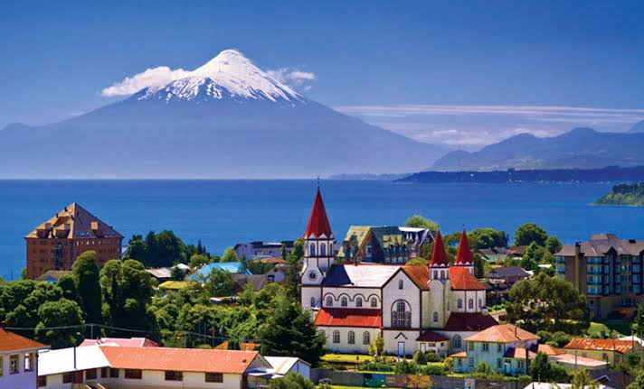

Welcome


This site explores how the Earth's internal and external processes shaped Chile, and how that physical geography shaped the people who live there.
Chile at a glance

- Capital
- Santiago
- Language
- Spanish
- Size
- About 4,300 km (2,700 mi) long from Peru to Cape Horn
- Borders
- Peru and Bolivia to the north, Argentina to the east, the Pacific Ocean to the west
Chile was colonized by Spain, so its culture is largely Spanish, though appreciation for Indigenous influence is growing. Mining leads the economy, especially copper, and the country has kept a representative democracy except for the military government of 1973 to 1990 (Carmagnani et al., n.d.).
A short history
- Before 1540 At least 500,000 Indigenous people lived in the region. The north fell under Inca influence, while the Mapuche (called Araucanians in the source) of the south resisted both the Incas and the Spanish.
- 1541 Pedro de Valdivia founded Santiago. The colony stayed poor, so settlers focused on farming, and a mixed Indigenous and European (mestizo) population grew.
- 1810 to 1818 Chileans formed their first local government in 1810. San Martín and O'Higgins crossed the Andes in 1817, and independence was declared on February 12, 1818.
- 1830 to 1891 A new constitution in 1833 brought stability, and copper, silver and grain exports grew. Chile won the War of the Pacific (1879 to 1883) and gained northern saltpeter lands.
- 1925 to 1973 A new constitution separated church and state. Reform movements grew until Salvador Allende was elected in 1970.
- 1973 to 1990 A military coup brought Augusto Pinochet to power. Voters rejected him in a 1988 plebiscite, and Patricio Aylwin became the first democratically elected president in 1990.
- 2010 to 2022 A magnitude 8.8 earthquake struck in 2010, and 33 trapped miners were rescued the same year. Protests in 2019 led to a constitutional process, and voters rejected the first draft in 2022.
Source: Carmagnani et al. (n.d.).
The South

The south of Chile is my favorite part of the country. Its volcanoes, lakes, forests and local culture make it feel like a different world from the capital.
Add a sentence or two about why the south matters to you.
The TV series Lugares que hablan visits places across southern Chile. Reporter Pancho Saavedra talks with local people and shows their food and traditions.